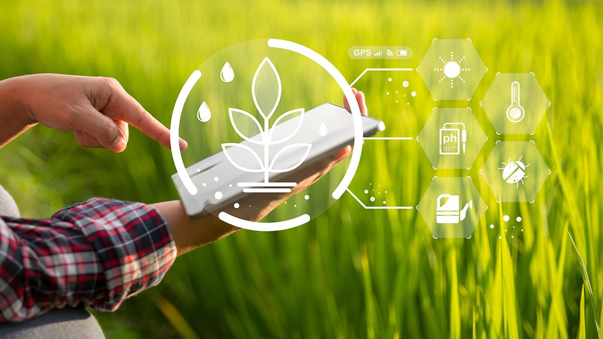

Welcome to Agritech
Agritech, or agricultural technology, is the use of technology to improve the efficiency, yield, and profitability of agricultural, horticultural, and aquaculture practices. It encompasses a wide range of applications, from high-tech innovations like AI and drone monitoring to more traditional mechanization, aiming to make farming more sustainable and productive Precision farming: Using data, sensors, and GPS to optimize resource use. For example, soil moisture sensors can ensure water is only used when and where it's needed. Monitoring and data analytics: Drones and satellite trackers monitor crop health and environmental conditions, while big data helps with strategic planning and management. Automated systems: AI-driven systems can automate irrigation and fertigation based on sensor data, leading to significant water and fertilizer savings. Biotechnology: Developing drought-resistant crops and other improved seed varieties to increase resilience and yield. Supply chain management: Technologies like blockchain can improve transparency, traceability, and logistics, helping to reduce waste and connect farmers directly with consumers. Environmental sustainability: Agritech can help reduce the environmental impact of farming through techniques that conserve water, lower greenhouse gas emissions, and minimize the use of synthetic fertilizers and pesticides. Challenges and opportunities Adoption: The adoption of new technologies can be slow, especially in developing countries where farmers may prioritize lower input costs and require demonstrations of long-term benefits before investing. Standardization: A lack of standardization in data architecture across different agri-tech systems can create integration challenges and cybersecurity risks. Investment: While Agritech has significant potential, investment has sometimes lagged behind other tech sectors, but government initiatives are now working to catalyze growth.